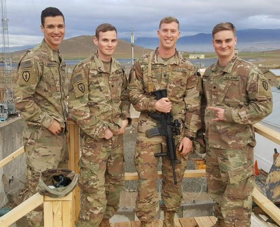

Who I am
I am a 26 year old veteran. Born in Burbank, California in 1997. Lived in Austin, Texas from 2005 until 2015. I joined the Army right out of Highschool. I was in the Active Duty Army for 8 years and, as of March 2023, switched to the Army Reserves. For the Army, I work as a Geospatial Intelligence Imagery Analyst. My every day job outside of the Army is a Customer Service Representative for a Toyota Dealership. I am the second oldest of 6 kids in my family. I have 5 brothers and 1 sister. I am a proud uncle to two beautiful nieces, Alexis and Blakely.
Hobbies

Hiking
I am really into exploring the outdoors and hiking up mountains. Some of my best memories are from hiking up mountains with friends and family while taking in the beautiful scenery. While in the Army, I had the privelege to be stationed in Alaska and Washington state. Both locations are fantastic places to explore the forests and see some gorgeous mountains, lakes, waterfalls, and greenery. Out of the two locations though, I would choose Alaska. The sights are so beautiful and pictures will never do it justice.

Art
I really like seeing, observing and attempting to create art. I will always say yes to going to an Art museum. I could spend hours there just looking at all the different art pieces. It is really interesting to see how each artist created their pieces and try to understand their thought process behind the piece's creation. While growing up, I was really into sketching and drawing. I would attempt to draw my favorite comic book characters, cartoon characters, or beautiful landscapes. I could never really get the right proportions for the characters. I would always check out How to drawing books from the school library. As I got older though, I slowly stopped drawing. But recently, I have begun to draw again.